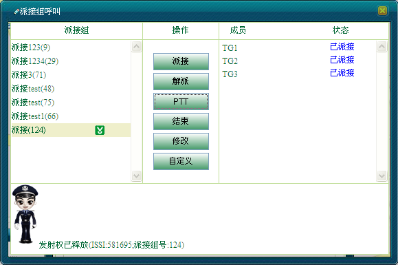

派接组呼叫是对所有组资源进行选择性的组合派接，使其能作为一个派接组呼叫。
当调度台发起派接组呼叫时，派接组中的所有通话组相当于合成为一个大的通话组，即：派接组中所有的通话组的成员都能接收到调度台语音；任意一个通话组内的成员使用组呼，派接组中所有的通话组成员都能接收到。
通话组派接可分为三个过程：
在本系统中，包括了预定义的派接组（即“编组信息”中的“派接组”）和自定义的派接组。
单击［调度功能/呼叫面板］，在“呼叫业务”模块中选择“派接组呼叫”，弹出“派接”对话框，显示“编组信息”中的“派接组”信息，如下图1所示。调度员可进行派接组相关的修改、派接、呼叫、解派接操作。
图1. 派接对话框
具有权限的调度员可以自定义添加派接组，具体操作步骤如下：
1）在“派接”对话框中单击＜自定义＞，弹出“添加”对话框，如下图2所示。
图2. 添加派接组
2）输入新增派接组信息，单击＜确定＞完成操作。
3）在“派接”对话框中显示新增派接组信息，且赋予一个派接组号。调度员可对新增的派接组发起派接组呼叫。
 说明：
说明：
系统最多允许创建8个派接组。
一个派接组至少需要添加一个成员组。
自定义的派接组在关闭“派接”对话框后消失，不会保存至“编组信息”的“派接组”信息中。
具有权限的调度员可以修改派接组信息，具体操作步骤如下：
1）在对话框中选中要修改的派接组名称。
2）单击＜修改＞，弹出“修改成员”对话框，如下图3所示。
图3. 修改派接组
3）调度员可根据实际需要修改派接组成员信息。
4）单击＜确定＞完成操作。此时，在“派接”成员模块中显示已包含想要派接的成员信息。
1）在对话框中选中要派接的派接组名称。
2）单击＜派接＞按钮，此时，在“成员列表”中会将派接的小组成员派接并显示派接状态。派接成功后，“派接组”模块中显示派接图标，且右侧“成员”的派接状态为“已派接”，如图4所示。
图4. 派接
说明：
若本调度台其他派接组中已派接了当前组，则派接失败。
派接成功后，调度员可对其发起派接组呼叫，具体操作步骤如下：
1）调度员按住中间区域的＜PTT＞按钮即可发起派接组呼叫，此时，所有被派接的小组成员都能接收到调度台语音，在“派接”对话框下方提示派接消息，如图5所示。
图5. 调度台发起派接组呼叫
2）调度员释放＜PTT＞按钮，即可释放发射权，如图6所示。

图6. 调度台释放发射权
3）当调度台释放授权时，派接组内某一成员通过按下PTT键获取授权，发射语音，如图7所示。
图7 用户获取授权
4）用户释放PTT键释放授权，如图8所示。此时组内其他成员也可发起语音。
图8. 用户释放发射权
5）在通话过程中，都会收到一系列的呼叫消息。
6）当通话结束时，调度员可单击＜结束＞结束派接组呼叫，如图9所示。
图9. 结束派接组呼叫
说明：
只有调度员单击＜结束＞才可结束派接组呼叫。
1）在对话框中选中要解派的派接组名称。
2）单击＜解派＞按钮即可取消派接，“派接组”模块中派接图标消失，且右侧“成员”的派接状态为“未派接”，如图10所示。

图10. 解派接
说明：
若当前“派接”对话框中有派接组正在派接，则无法关闭“派接”对话框，需先结束相关派接。
Copyright © 2012 Eastcom, Inc. All rights reserved. |
||